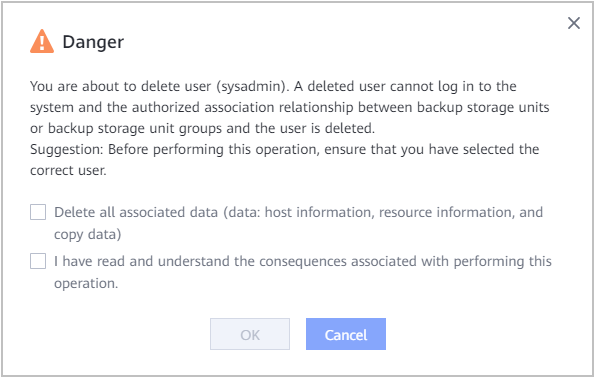

You can delete a user that is no longer needed.
Context
The system administrator can delete other administrators.
Procedure
- Choose System > Security > RBAC > Users.

For 1.5.0, choose System > Security > Users and Roles > Users.
- (Optional) Click
 next to Role to filter users. You can also click
next to Role to filter users. You can also click  next to Name to search for a user.
next to Name to search for a user. - In the row of the target user, choose More > Delete on the right.
- In the dialog box that is displayed, click OK.
